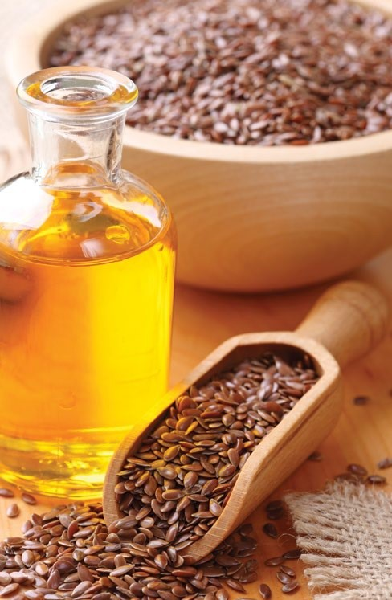
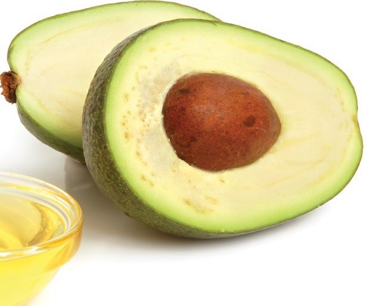
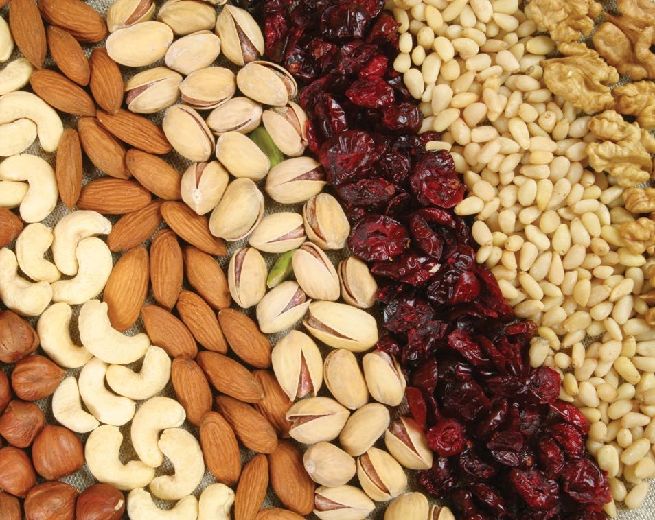
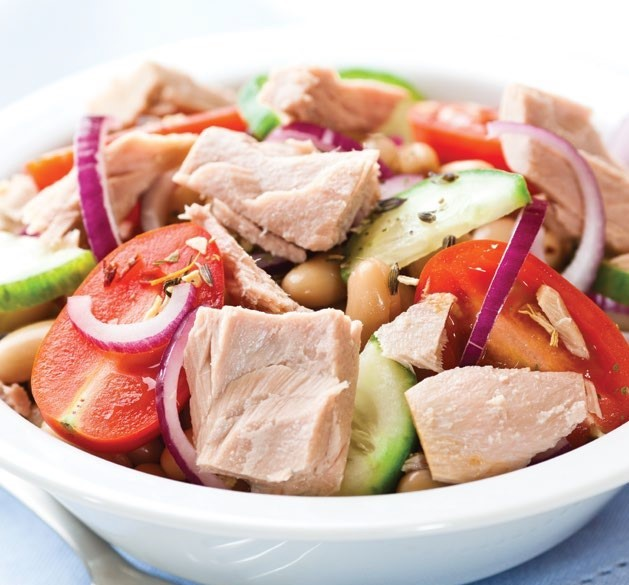
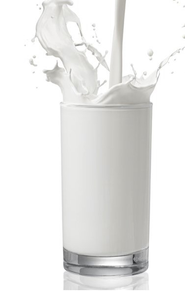
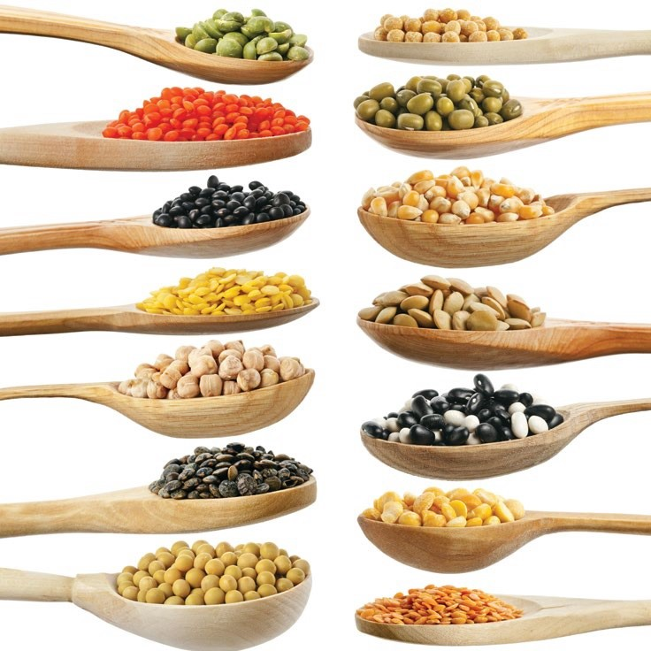

What are carbohydrates?
Most carbohydrates (“hydrated carbon”) containatoms from one water molecule (H2O) for each atom of carbon (C). A monosaccharide is the basic
dietary carbohydrate and has six carbons. Examples are glucose, fructose, and galactose. Glucose is the sugar in blood.
Fructose is twice as sweet as glucose and found in fruits. Galactose is less sweet than glucose and present in milk. Starches in vegetables and grains are long
chains or polymers of glucose. Cellulose is also a long chain or polymer of glucose. It is one of several indigestible carbohydrates called fiber.
Why are carbohydrates important?
Provide energy for brain, muscle, and other body functions. Combine with proteins or fats to form important
parts of cartilage, connective tissue, the nervous system, and the immune system.
Contribute to stool softness and normal bowel function as fiber. Large amounts of some fibers in the bowel can ferment to produce gas (flatus).
Can eating or drinking certain carbohydrates cause
diabetes appear early if one is at risk (e.g.,
has a family history of diabetes, obesity, or sedentary lifestyle)?
High-glycemic-index foods increase risk. They include sugary beverages, cornflakes, many bakery items (bread, crackers, cookies, pastries,
etc.), rice, and potatoes. They are easily digested and increase blood sugar quickly. Low-glycemic-index foods increase risk less.
They include pasta, high-fiber foods, legumes, oatmeal, milk, yogurt, nuts, peanut butter, and
whole fruits. ― They are digested more slowly and influence blood sugar less.
Fats



What are fats?
Fats are mostly made of carbon and hydrogen and do not mix well with water. Most dietary fats, called triglycerides, are made with three fatty acids.
Fatty acids can be saturated (full of hydrogen), monounsaturated, or polyunsaturated, depending on how much hydrogen can be added to them. Saturated fats provide concentrated
energy, tend to be solid (e.g., in butter and lard), and promote high blood cholesterol. Monounsaturated fats are a healthy form of concentrated energy (e.g., in olive, canola, and peanut oils)
and are less likely to spoil than polyunsaturated fats. Certain polyunsaturated fatty acids (PUFA) in the diet are essential to good health and cannot be made by humans.
Trans fatty acids are formed when hydrogen is added to unsaturated fats to make them solid. Cholesterol is another
type of fat found in all cell membranes in small amounts.
Why are fats important?
Cell membranes are layers of fat which form cell walls and chambers. ― They keep fluids separate for chemical reactions characteristic of life and require
essential fatty acids to function normally. Fat is important insulation. ― Fat just below skin insulates the body from extreme temperatures. ― Layers of
fat around important organs insulate them from physical shock or injury. ― A special fat forms the layer around nerve cells that “electrically” insulates them from each other. Multiple sclerosis is an example
of a condition where this layer is damaged. Fat is an efficient way to store energy. ― A pound of fat contains about 3500 calories. ― Fats contain 9 calories in each gram compared to 4 for proteins and carbohydrates.
if energy were stored as carbohydrates instead of fats, then body weight could be 30% greater. Cholesterol performs several functions. ― It stabilizes cell membranes. ― It is the basis for some hormones (e.g.,
hydrocortisone, estrogen, and testosterone) and for the production of vitamin D by sunlight on skin. ― It is the basis for bile salts which help
digestion of fat. However, excess cholesterol, saturated fats, and trans fats in the diet can increase bad cholesterol in blood and worsen atherosclerosis (clogging of the arteries) and associated diseases.
Decreasing these fats or replacing them with monounsaturated fats can help reduce these effects.
Proteins



What are proteins and where do they come from?
Proteins are the “building blocks of life” and necessary for good health. Proteins are made of chains of up to 20 different amino acids. During
digestion, proteins are broken down into amino acids for the body to use. Amino acids are generated by the body or
obtained through food. There are eight “essential” amino acids that cannot be made by adult bodies and must be eaten. “Complete” proteins contain
all the essential amino acids in adequate amounts. Foods with
complete proteins include meats and animal products such as milk, yogurt, cheese, and eggs. Soybean proteins, as in tofu or “soy milk,” are
also complete proteins. “Partially complete” proteins contain all the essential amino acids, but the amount of one or more of those essential amino acids is inadequate. Most proteins in a plant group are
only “partially complete” but can be made “complete” if combined with another protein source.
Why are proteins important?
Provide needed components for gene and cell reproduction.
Carry out the instructions of the genes in the cells.
Form a major part of muscle, including the heart.
Make up tendons and most connective tissues.
Help make up collagen and cartilage, which determines the shape of the skeleton.
Direct and control the chemical reactions of life as enzymes.